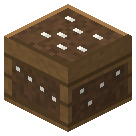

Saltpeter Bed
Era 1Farm

idle

running
Nitre bed: 4 organics (compost, mulch, rotten flesh, any cereal straw - wheat, barley, oats, rye, rice, corn) + 1 wood ash (or 1 potash per 4 batches) + 1000 mB water -> 1 saltpeter per day. No fire, steam or acids. Build them in rows.
Parameters
| Era | 1 — Farm |
|---|---|
| Multiblock | no |
| Drive | own firebox |
| Tanks, mB | 4000 |
| What it does | organics + ash + water -> saltpeter in a day; potash = 4 batches |
| Made of | clay, dirt, planks, slabs |
Fed by
- Potash ← Evaporator, Salt Pan
- water ← Artesian Well
Feeds
- no Zavod machine uses its product